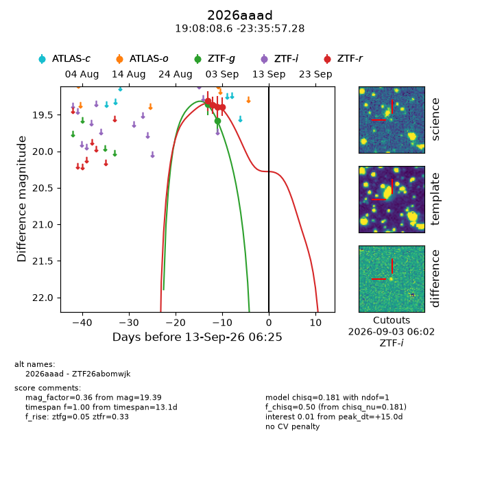
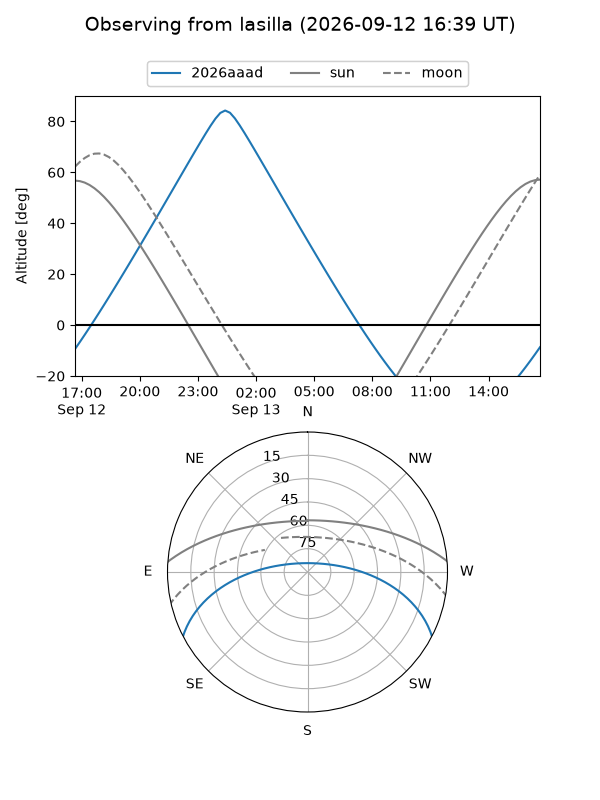
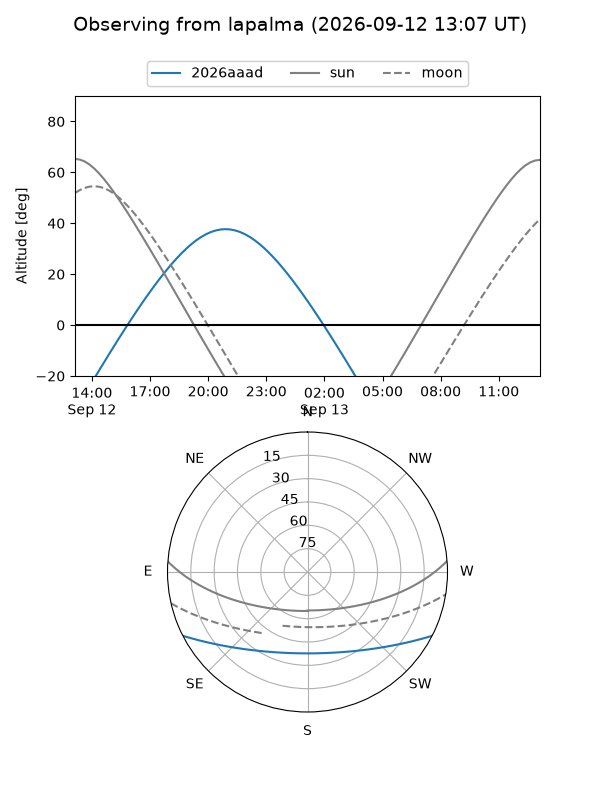
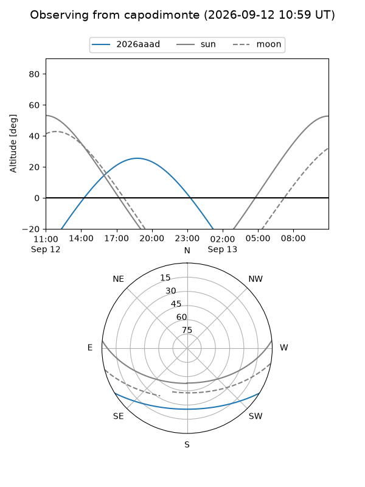
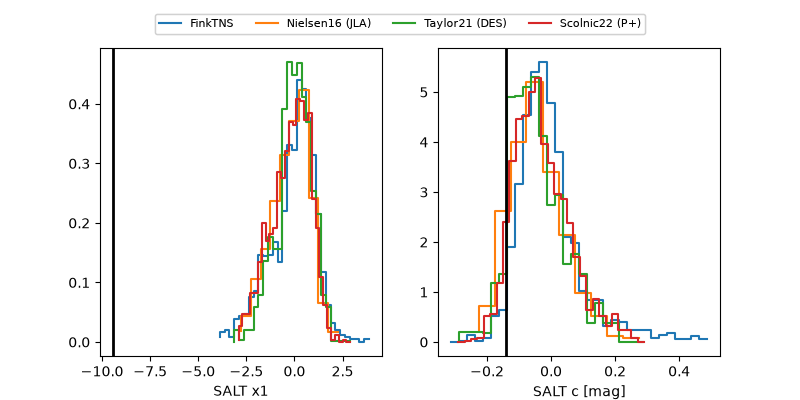

2026aaad
Target 2026aaad at 2026-09-13 06:27
Aliases and brokers:
FINK-ZTF: ztf.fink-portal.org/ZTF26abomwjk
Lasair-ZTF: lasair-ztf.lsst.ac.uk/objects/ZTF26abomwjk
ALeRCE-ZTF: alerce.online/object/ZTF26abomwjk
YSE-PZ: ziggy.ucolick.org/yse/transient_detail/2026aaad
TNS name: wis-tns.org/object/2026aaad
Direct TNS query: direct search
alt names
ZTF26abomwjk (ztf,fink_ztf)
2026aaad (tns,yse)
Coordinates:
equatorial (ra, dec) = 287.0360,-23.59924
equatorial (HMS+DMS) = 19:08:08.63,-23:35:57.28
galactic (l, b) = (13.3082,-14.00126)
Flags:
TNS type: nan
peak dt: +15.0
Photometry:
last ztfg=19.58, ztfr=19.39
2 ztfg, 4 ztfr detections
Lightcurve

Visibility



Additional plots
